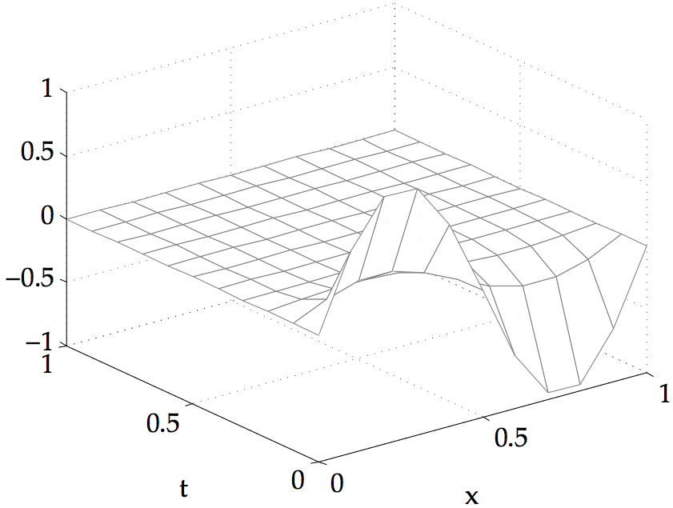
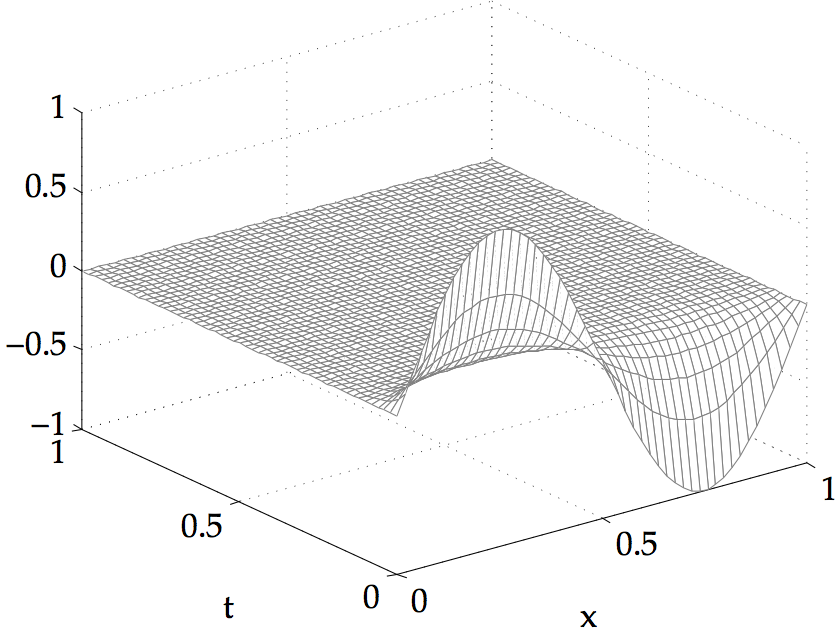

COMPUTER PROBLEMS 8.4
\(\def\ds{\displaystyle} \)
1 The Burgers' equation can be solved with Program 8.7. The approximate solutions for \(D=1\) are shown for \(h=k=0.1\) on the left and \(h=k=0.02\) on the right. The solution approaches the zero equilibrium as time increases.


3 Fisher's one-dimensional equation can be solved by Program 8.7, replacing the inner loop commands by the appropriate code fragment from the text. The approximate solutions approach the (a) zero equilibrium \(u=0\) and (b) \(u=2\) as time increases.